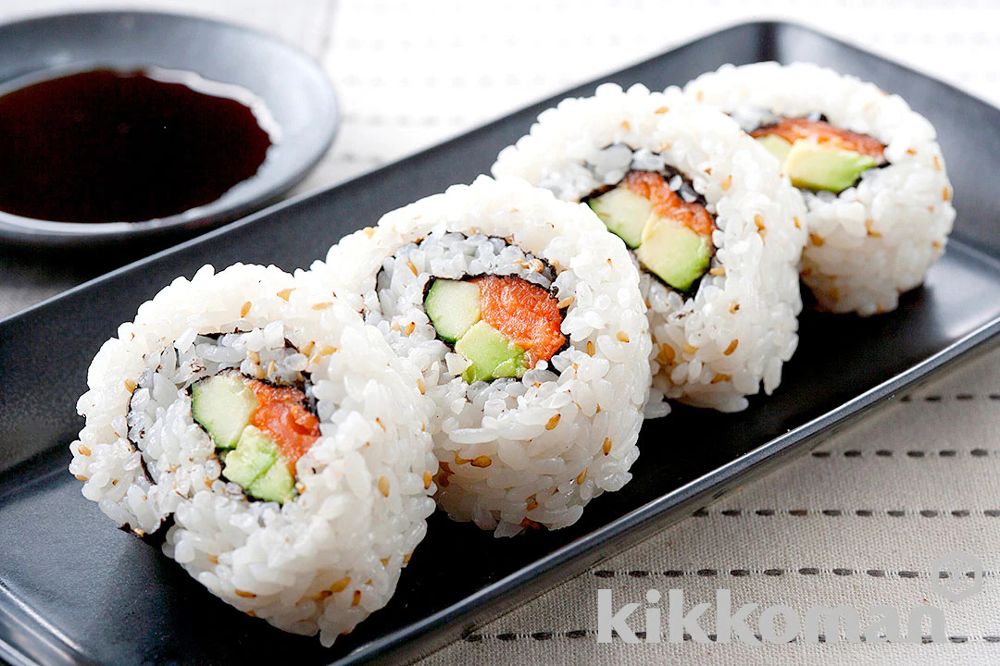

Sushi

Description
This dish is a simple California-style sushi roll with salmon and avocado.
The recipe will require 10 minutes to prepare.
Ingredients
- Cooked white rice
- Seaweed
- Smoked salmon
- Cucumber
- Avocado
- Sesame seeds
- Soy sauce
Steps
- Cut the cucumber into 1 cm (1/2 in.) cubes. Peel the avocado,
remove the pit and cut in the same manner as the cucumber.
- Mix (A) with the rice, then add in ground sesame seeds and mix well.
- Place the seaweed on wax paper, spread (2) on top, cover in an additional piece of wax paper, turn over and peel
away the piece on top of the seaweed.
Leave about 2 cm (3/4 in.) of space free in front of you, and fill the rest with
horizontally placed pieces of salmon and (1).
- Firmly roll away from you to make the sushi roll.
Let sit for a while, then enjoy with Kikkoman Soy Sauce.